Style Guides
This guide provides examples of the overall mood, silhouette, and common pieces used in goth, punk, and streetwear outfits. The goal is to make each style easier to understand and easier to wear in everyday life.
Goth
Goth style often uses dark colors, dramatic layers, mesh, lace, boots, and silver-toned accessories. A simple starting point is a fitted black top, dark bottoms, boots, and a structured outer layer.
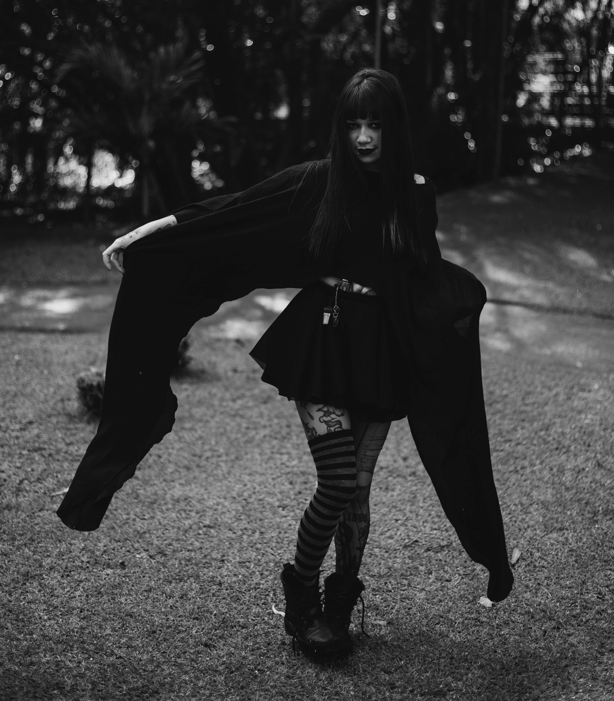
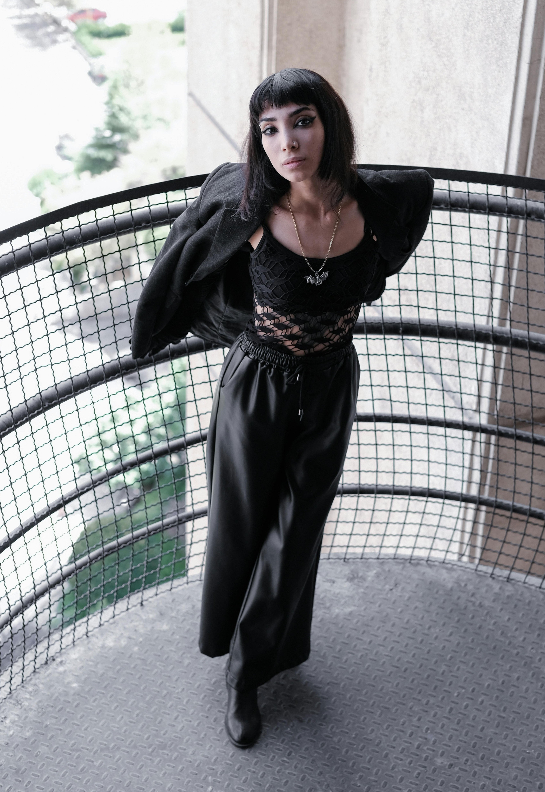
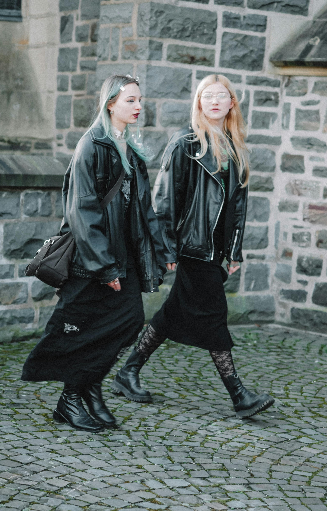
Punk
Punk style feels rougher and more rebellious. Band tees, plaid, distressed fabrics, leather, chunky shoes, and hardware details all help create a stronger punk look.

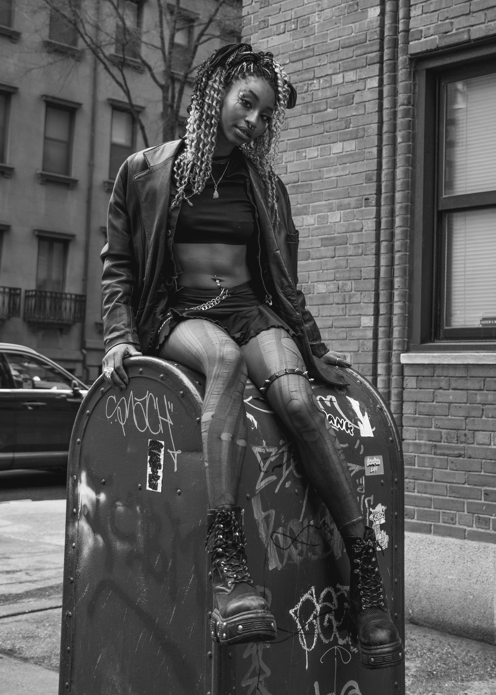
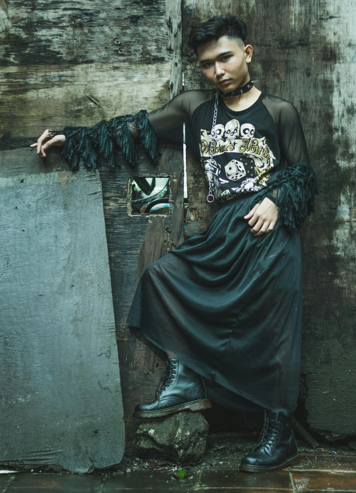
Streetwear
Streetwear focuses on shape, proportion, and comfort. Oversized layers, loose pants, sneakers, and carefully chosen accessories can create a look that feels relaxed but still styled.

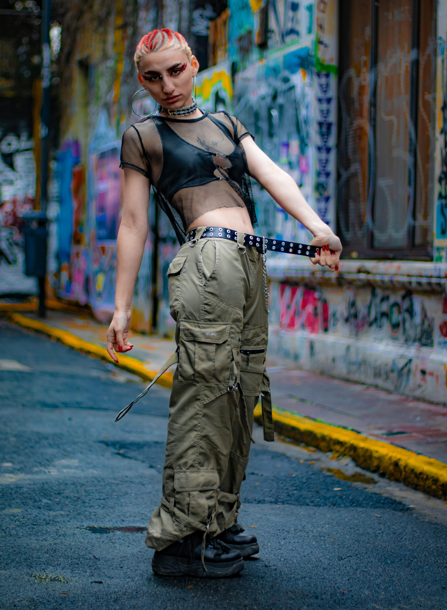

Grunge
Grunge style often uses relaxed layers, worn-in textures, flannels, oversized tops, loose denim, dark colors, and comfortable shoes. A simple starting point is a graphic tee or tank, baggy jeans or a long skirt, a flannel or cardigan, and boots or sneakers.


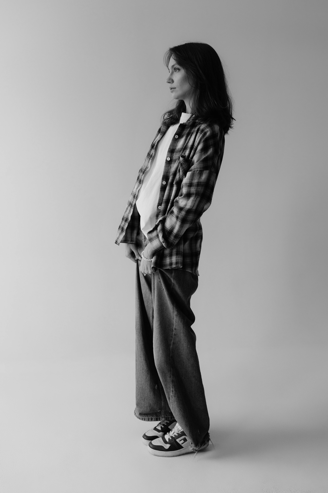
Emo
Emo style often uses darker colors, fitted or graphic tops, skinny or straight-leg pants, layered accessories, band-inspired pieces, and bold hair or makeup details. A simple starting point is a fitted tee, dark bottoms, Converse-style shoes or boots, and accessories like wristbands, chokers, or layered necklaces.
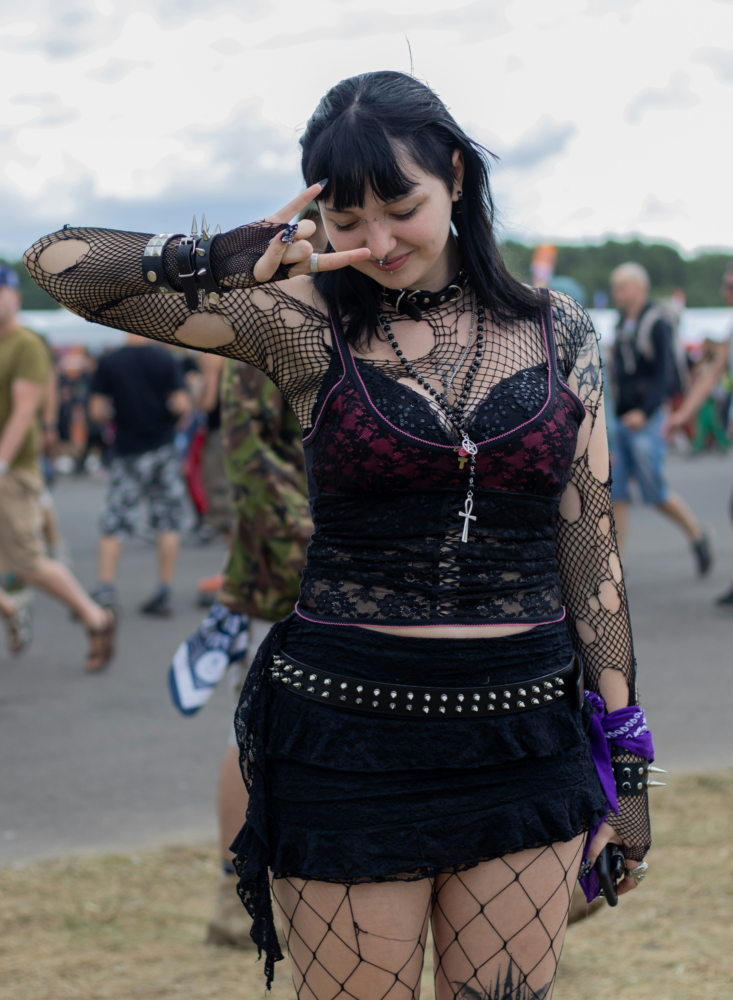
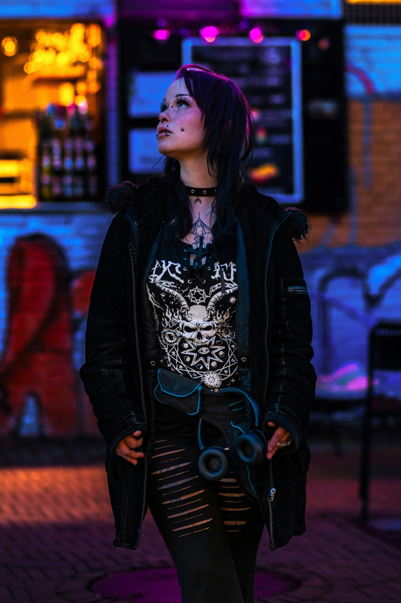
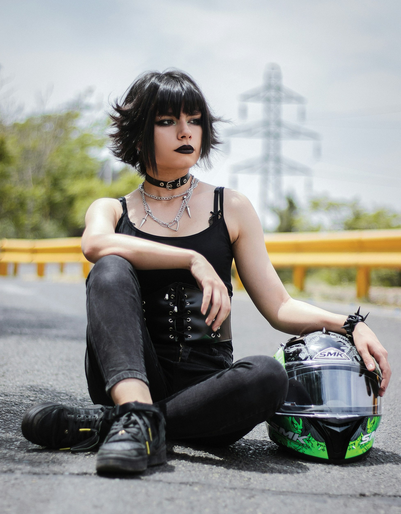
Industrial
Industrial style often feels heavier and more structured, using black clothing, hardware details, straps, buckles, mesh, leather-look pieces, and chunky shoes. A simple starting point is a black top, structured bottoms, platform boots, and accessories with metal details.
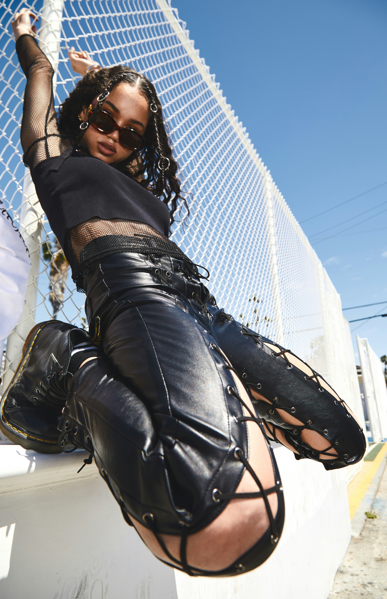
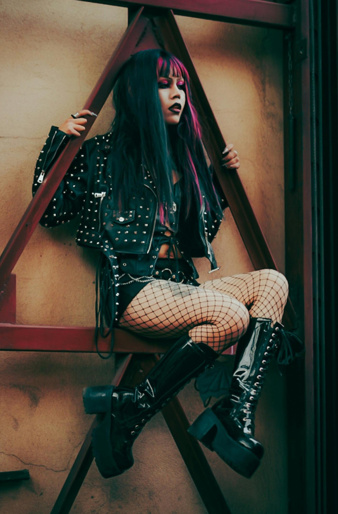
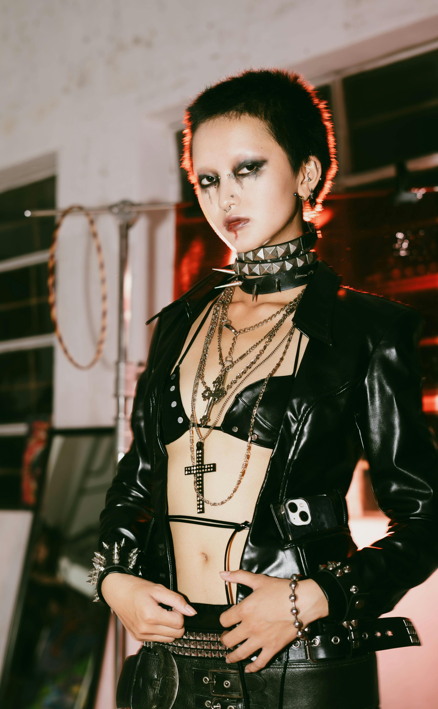
Frequently Asked Questions
No! A few strong basics, layers, shoes, and accessories can create a lot of different outfits. It is usually better to start with pieces you will actually wear often instead of buying a lot at once.
Sure! Mixing styles can make your outfits feel more personal. Try repeating colors, textures, or silhouettes so the outfit still feels intentional instead of random.
Start with pieces you will actually wear often, like dark tops, comfortable bottoms, shoes, and one or two accessories. After that, add pieces that help show your personal style more clearly.
Try adding one stronger detail, such as a belt, layered necklace, jacket, textured tights, or statement shoes. Small styling choices can make basic pieces look more complete.
Choose soft fabrics, stretchy pieces, loose layers, and shoes you can actually walk in. Comfort-focused outfits can still look alternative if the colors, accessories, and proportions fit the style.
Repeat one or two elements across the outfit, such as black clothing, silver hardware, chunky shoes, plaid, lace, or a specific accent color. Repetition helps separate pieces feel like they belong together.
More Inspiration
If you want even more ideas for customizing clothes and building an alternative wardrobe on a budget, check out Gothic Charm School's guide to gothy DIY tools!